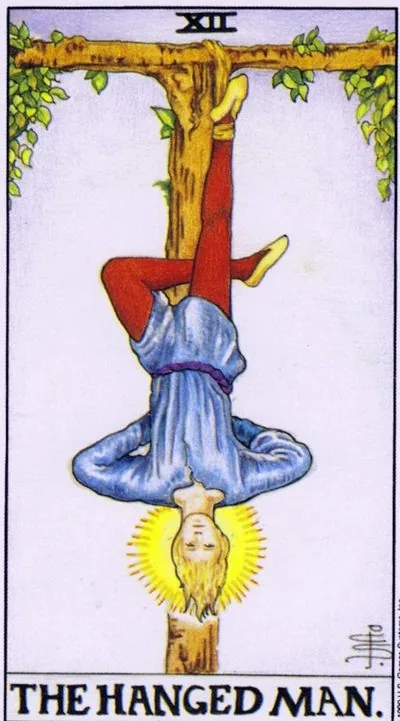

Старший аркан · XII
XIIПовешенный
The Hanged Man
Добровольная пауза, которая меняет всё: мир, рассмотренный вверх ногами, оказывается совсем другим.
Архетип и основное значение
Повешенный висит на живом дереве спокойно и почти блаженно — по собственному выбору. Это не казнь, а остановка ради прозрения: пока привычная жизнь замерла, глаз учится видеть перевёрнутое как прямое.
В раскладе карта говорит: форсировать события бесполезно и вредно. Ситуация требует не действий, а смены оптики — иногда достаточно перевернуть задачу, чтобы ответ стал очевиден. Пауза здесь не потеря времени, а её вложение.
Аркан связан с темой добровольной жертвы: шаг назад ради двух вперёд, отказ от малого ради главного. Тот, кто умеет подвиснуть в неопределённости без паники, выходит из неё с подарком, недоступным торопыгам.
В быту
День просит притормозить: перенесите важную покупку, не отправляйте написанное сгоряча письмо, дайте ситуации настояться. Хорошо отвлечься от привычного маршрута — прогулка, другой конец города, чужое хобби освежают взгляд. То, что утром казалось проблемой, к вечеру может оказаться просто неудачным ракурсом.
Работа и карьера
Проект завис: согласования тянутся, партнёры молчат, результат не двигается. Карта советует использовать паузу — пересмотреть подход, собрать недостающую информацию, заняться тем, что откладывался. Активный штурм сейчас даст меньше, чем терпеливая переподготовка.
Отношения
Отношениям нужна передышка, а не революция: перестаньте требовать немедленных ответов и посмотрите на партнёра со стороны — со его обстоятельствами, страхами, языком любви. Иногда искренняя уступка, даже жертва временем и комфортом, растапливает лёд быстрее выяснений. Одиноким карта намекает: пока вы влюблены в собственный сценарий, реальный человек проходит мимо незамеченным.
Здоровье
Организм просит режима восстановления: сон, вода, снижение темпа. Хроническое напряжение лечится не героическими нагрузками, а умением расслабиться — хороши йога, массаж, плавание. Диагностика может потребовать перепроверки: не торопитесь с выводами по первым анализам, картина прояснится позже.
Эзотерическое значение
На глубоком уровне это инициатический аркан: посвящённый подвешен между небом и землёй, чтобы увидеть мир с изнанки. Йога, медитация на перевёрнутых позах, практика осознанной паузы между вдохом и выдохом открывают тот же эффект — сдвиг перспективы. Руна Иса и принцип «стояния в потоке» близки ему по духу: сила рождается из неподвижности.
Зависание затянулось: пауза из плодотворной превратилась в болото, а жертва — в напрасную.
Архетип и основное значение
Перевёрнутый Повешенный — тот, кто висит не по выбору, а по инерции. Пауза, задуманная как стратегия, стала способом спрятаться от решения; человек ждёт, что жизнь сама его снимет с дерева.
Вторая грань — показная жертва: страдать напоказ, коллекционировать благодарность за то, чего никто не просил. Мученик такого рода не хочет выхода, потому что роль кормит его вниманием.
Аркан предупреждает: мир уже поменял ракурс, а вы смотрите по-старому. Пока не отпущено лишнее, новое не входит — подвешенность без цели превращается в пустоту.
В быту
День проваливается в прокрастинацию: дела висят неделями, мелочи разрастаются в завал. Проверьте, не делаете ли вы лишнего для тех, кто привык брать молча. Разгрузите список задач до трёх пунктов и сделайте их — любое движение вниз, к земле, сейчас целебнее красивого зависания.
Работа и карьера
На работе застой, который вы выдаёте за стратегию: проекты не двигаются, потому что решение никто не хочет принимать. Возможна ситуация, где от вас ждут жертвы ради чужого результата — переработки, чужие задачи, обещания «потом оценят». Карта советует назвать цену своего терпения вслух или выйти из подвеса совсем.
Отношения
Отношения застряли в вечном ожидании: партнёр «не готов», разговор откладывается, вы живёте в паузе, которая никому не нужна. Жертвенность здесь не добродетель, а способ избежать честного вопроса — нужны ли вам эти отношения на самом деле. Если отдаёте больше, чем получаете, и гордитесь этим, карта предлагает снять нимб и поговорить прямо.
Здоровье
Затянувшийся режим ожидания бьёт по телу: вялость, отёки, застойные явления от сидячего образа жизни, обострения, которые тянутся месяцами. Лечение бросается на полпути — то назначено, то заброшено. Требуется дисциплина простых действий: движение ежедневно, курс терапии до конца, а не героические рывки через силу.
Эзотерическое значение
В мистическом смысле перевёрнутость говорит о блокированной инициации: человек боится отпускания, без которого невозможен переход, и цепляется за старую личность. Практики могут буксовать, дар — ощущаться украденным. Полезны техники завершения и земляные практики — ходьба, работа с телом, возвращающие в поток.
🌿 Кратко и просто
Основная идея
Повешенный — это состояние, когда привычный взгляд больше не работает. Человек оказывается буквально «вверх ногами» и вынужден посмотреть на ситуацию с другой стороны.
Как проявляется
Компромисс, альтруизм, эмпатия, обещания и способность добровольно ограничить себя ради чего-то более важного.
Работа и деньги
Связанные средства, долги, обязательства, замороженные деньги.
В отношениях
Способность учитывать интересы партнёра и принимать ограничения, которые возникают внутри союза.
Теневая сторона
Самопожертвование становится чрезмерным. Человек забывает собственные цели и начинает спасать тех, кого спасать не просили.
Особенность школы
Повешенный связан с Весами и VII домом. Его ключевой мифологический образ — Один, который висел на мировом дереве ради получения знания.
📜 Развёрнуто — выжимки лекций
Суть карты
Повешенный — «Венера, прозревшая»: нимб означает обретённое новое зрение, но по земной природе это ещё Венера 7-го дома на Весах; истинный Нептун с жертвой ради всех — дальше, в Рыбах. Ядро карты — «ощущение подвешенности»: человек должен учитывать не только свои интересы, как Маг, но и интересы противоположной стороны. Формула Одина: «если хочешь что-то приобрести — чем-то расстанься», жертва приносится им самому себе.
Прямое положение
Социум и желания. Альтруист, который «стоит вверх ногами» и смотрит на всё с новой точки зрения; новатор, вносит свежую струю. Социальные ограничения — неудобства, которые мы терпим, потому что «так не принято». Продолжение карты Justice — социальный договор: «справедливо — когда ты жертвует чем-то ради другого в надежде, что другой тоже пожертвует чем-то ради тебя». Обещания — то, чем мы «связываем себя», даже когда исполнение неудобно.
Время и позиция. Подвешенное состояние, «ни туда ни сюда», карта скованности и затянутости. Часто играет именно как время: медленно, слишком затянуто, «ситуация застыла в воздухе». Плюс ожидание: сделал человеку хорошее — придётся дождаться ответа.
Работа, финансы. Средства в обороте — деньги работают в деле, связаны, «у вас руки связаны». Долги: дав в долг, рискнул деньгами и спокойствием; финансовые обязательства сковывают свободу действий. Застой — одна и та же зарплата, «всё застыло, висит».
Личная жизнь (7-й дом: брак, условия брака, число разводов и браков, договоры, союзы, способность к компромиссу, оппоненты и враги). Самоотдача: человек сам решает, чем пожертвовать. Эмпатия через проживание чужого ограничения: хотите понять слепого — день с завязанными глазами. Минусы полосы: эмоциональная скованность, обещания, данные на эмоциях («что написано пером — не вырубишь топором»).
Саморазвитие. Воздушная тема: необычный взгляд, творчество; идеи приходят «из мира Хирона» озарением-инсайтом; его включают йога, музыка, изменённые состояния.
Негативное значение
- Формула школы: Повешенный в негативе — тот же Повешенный, что и прямой, только «в негативном значении».
- - Самопожертвование стало «слишком глубоким»: глубокая эмоциональная привязка, человек забывает свои цели ради целей другого.
- - Навязанная помощь с корыстью: «давайте-давайте, мне же не сложно» — тащит через дорогу «старушку, которой это сто лет не надо», явно преследуя свои цели.
- - Одержимость, психическая неуравновешенность — редкое узкое значение; чаще просто подвешенное состояние.
- - Зажатость взглядов: не признаёт другую точку зрения, обвиняет во всём других, не видя своей вины.
Акценты и фишки школы
- - Его астрология поверх европейской мифологии: 7-й дом / Весы, управители Венера (любовь ко всем ближним) и Хирон — «получеловек-полуконь», учитель героев, ходок в «другой большой мир»; его знак — ключик, «тот самый золотой ключик Буратино», ключ в духовный мир.
- - Про Нептун: нимб = прозревшая Венера, её высшая ипостась, но истинный Повешенный-Нептун дальше — тот, кто в Рыбах жертвует собой ради всех; Христом карту называть нельзя. Золотую Зарю поправляет: она звала карту «утопленником» — «не всё, что считала Золотая Заря, является правдой».
- - Цитирует Уэйта: фигура образует крест буквой Т; лицо «выражает глубокий транс, но никак не страдание — посему это не мученик»; дерево живое, листья зелёные — Мировое древо; не карта смерти (повешенный за шею скелет — ошибочный образ); скрыта «взаимосвязь между божественным началом и вселенной», тайна смерти и воскресения — намёк на Иисуса, которого тогда нельзя было называть прямо.
- - Стрижень лекции — Иггдрасиль: корни сплетаются из прошлого всех людей, ствол — настоящее, ветви — будущее; дракон Нидхёгг грызёт корни — так желания «грызут нас» из подсознания; орёл наверху — сознание; белка Рататоск — Гермес-вестник. Три корня: источник норн (Урд, Верданди, Скульд), колодец Мимира (ради глотка Один отдал правый глаз) и кипящий Хвергельмир (вода — стихия эмоций). Вывод: «человек повторяет своим строением устройство мира».
- - Один девять дней висел «ни жив ни мертв» и узнал руны через копьё Гунгнира. Связка домов: руны — огонь (Марс, первый дом), Таро — вода, про ощущения мира; «левая и правая рука». Понять мало — надо идти делать.
- - Пример ученикам «пионер и старушка» (острота Раневской): пионер силой тащит старушку через дорогу, которой это не нужно, — ради права считать себя хорошим; всякое добро возвращается, система замкнута.
- - Апостол Пётр — висящий вниз головой: счёл себя недостойным казни как Христос; «номер два — всегда Весы, уступают первенство тому, кому нужнее». Первый папа, держатель ключей от Царствия Небесного — перекличка с Иерофантом. Трижды отрёкся, покаялся, прощён — «правильный предатель»; неправильный — Иуда, повесившийся за шею (образ тёмной Рыбы). Жёлтое и синее на карте — солнце озарения над небом.
- - Обряды инициации: подвешивания вниз головой, прыжки с лозой, шрамирования — вблизи смерти (следом идёт Смерть; рядом Анубис — страж весов на суде Осириса) человека посещают видения; отсюда смысл карты: приводя себя в неудобное положение, действуешь по-новому — «и находишь новое».
- - Не самая духовная карта: максимум духовности — Мир; Повешенный лишь «прикоснулся краешком глаза», увидев перед лицом смерти мелкость проблем. Совет: «долго висеть незачем» — Будда поднялся из-под дерева и пошёл жить. По методике Шанской: 12 в дате рождения — «прямая линия с Богом».
- - Киноряд самопожертвования: Рон в волшебных шахматах «Гарри Поттера»; «Телохранитель»; «Титаник» (Дикаприо — «идеальные супруги»); Гэндальф «You shall not pass!»; Арвен, отдавшая бессмертие за любовь; «Армагеддон» (Брюс Уиллис); «Константин» — Киану Ривз отдаёт душу (Овен–Весы работают в паре); «Спасая рядового Райана»; «Интерстеллар» — отец жертвует годами жизни ради детей; «Аватар» — «правильное предательство» ради гармонии (параллель Покахонтас).
Ключевые слова
- Подвешенное состояние • самопожертвование • новый угол зрения (инсайт) • обещания и обязательства • средства в обороте • долги • затянутое время, застой • компромисс • социальные ограничения • «чтобы получить — отдай»
- ---